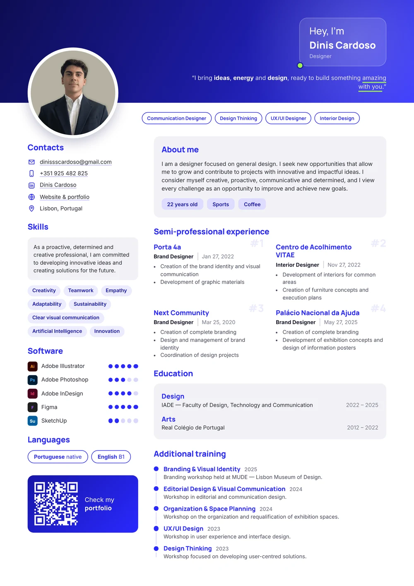

Home
Curriculum
My CV
Education, skills and experience. Hover over the CV to download it.
Download PDF
About me
I am a designer focused on general design. I seek new opportunities that allow me to grow and contribute to projects with innovative and impactful ideas. I consider myself creative, proactive, communicative, and determined. I view every challenge as an opportunity to improve and achieve new goals.
Education
- DesignIADE — Faculty of Design, Technology and Communication
- ArtsReal Colégio de Portugal
Skills
CreativityTeamworkEmpathyAdaptabilitySustainabilityClear visual communicationArtificial IntelligenceInnovation
Tools
Contact
Contact me
Have a project in mind? Let’s chat — I’m available for work in Lisbon and worldwide.